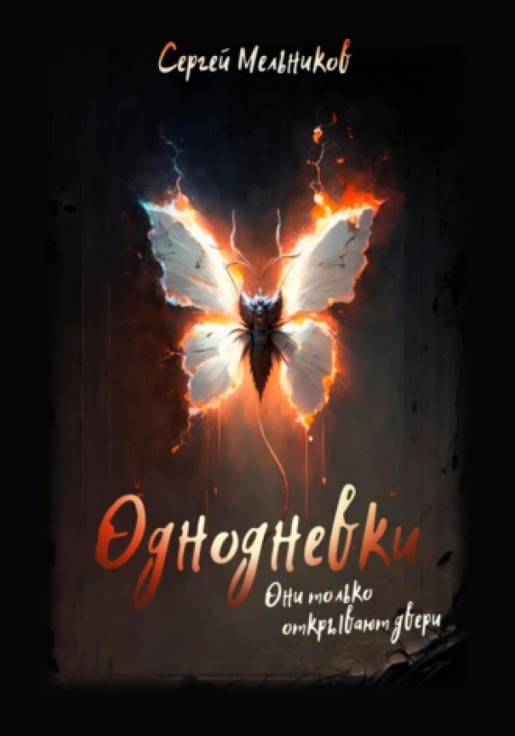

Увлекательное путешествие в разум и сердце

Однодневки. Они только открывают двери
Городское фэнтези, Мистика, Триллеры
Описание
У Семёна началась новая жизнь, а старая закончилась. В новой жизни нет родных, но есть пустая квартира в чужом провинциальном городке и неожиданные вызовы. А ещё обратный отсчёт: "Десять... Девять... Восемь..." Он пытается привыкнуть, приспособиться, не рефлексировать — не получается. Неожиданно у Семёна появляется друг, и становится ещё сложнее. О чём вообще этот рассказ? Может, о смертных грехах? А вы уверены, что их всего семь?
-
Объем:30 стр.
-
Возрастное ограничение:16+
-
Дата написания:2023 г.
-
видеовариант
-
аудиокнига